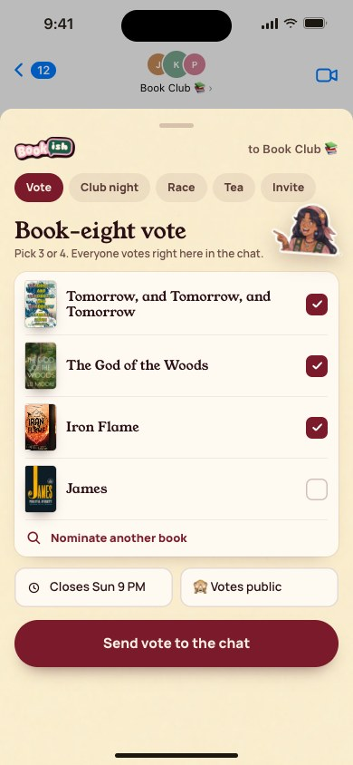
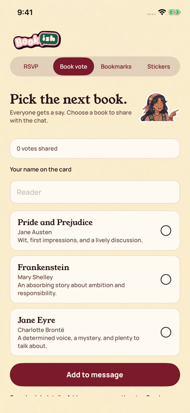

All screens40. imessage extension send vote
Oct 18 batch reference; individual approval not recorded in decisions 111-143
Rebuilt and inspected, native review host (prior score 7/10)
Actual production vote editor in a standalone simulator host, including error and large-text states. Apple’s conversation, keyboard, and transport are not captured.
Native provenance, reproduction, and device-validation limits
Approved reference
Actual UIKit content in standalone simulator host
Additional actual native states: editor vote, editor vote scrolled, editor vote error scrolled, editor vote large type, editor vote large type scrolled.
Original source: external/approved-art/full-app-1016/html/40-imessage-extension-send-vote.html